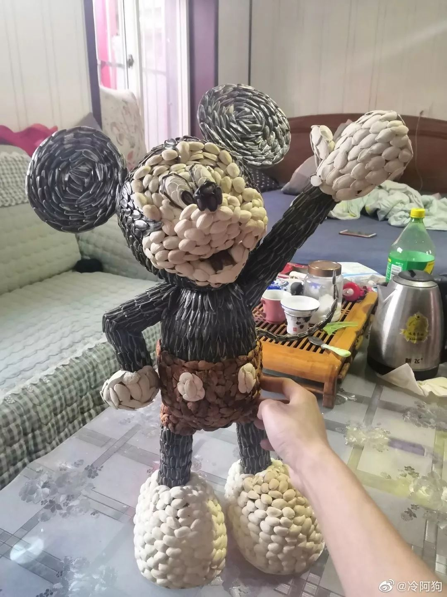

与无力感共处|郭晶的武汉封城日记|1⁄30-2⁄1
原文链接 备份链接 1月31日出门健身的武汉市民（图片由郭晶提供） 这是我的朋友郭晶的日记。 记录了封城期间在武汉独居的外地女性的真实生活体验和心理感受。 这些文字见证了郭晶如何从适应突发危机到重建日常生活，再到尝试帮助他人的过程。 之前 …

8个关键词，构成了2020年1月这场牵涉全国疫情的一个侧面——一个个普通人，是如何度过了这个特殊的一月。
这次月度总结，我们决定记录一些疫情中令人啼笑皆非的小新闻，因为，这些看似微不足道的切片，构成了每个人在大事件中的真实生活——生活很难，但它始终在继续，尽可能地笑对或许是我们唯一可以用来抵抗艰难的武器。
策划 | 洛阳铲小分队
口罩
这绝对是1月最重要的关键词。
有人在微博上发起投票：“你们那里还能买到口罩吗”——近30万人参与了投票，其中26万人表示，买不到了。
没有口罩，又不得不走出家门的人们，只能戴上自制口罩，以达到隔离飞沫的效果。1月30日，有博主在微博上征集“你见过最硬核的口罩”，目前，该条微博下已有1.2万条评论，从这些“硬核”口罩中，我们可以瞥见人民群众的生（满）存（心）智（无）慧（奈）——
一些口罩由水果外壳制成。
一张广为流传的朋友圈截图显示，一位95岁的老人用橘子皮自制了口罩，并戴着口罩去社区医院取药。朋友圈文案写道：“他说这种口罩内层湿润可以美容，外面美观大方还可以防止细菌传染，而且戴上它可以润肺，有一股桔香，真是个聪明的长寿老人，真心祝他长寿！”与此类似，广西的网友们见到了家附近的老人，给柚子皮穿针引线，然后戴在了脸上。
一位网友在自家楼下的超市里，见到了字面意义上“硬核”的口罩：用椰子壳制成的口罩，紧贴着老人的口鼻。
▲群众自制桔子皮“口罩”。图 / 网络
也有人用保鲜膜、塑料水桶、雨衣和塑料袋制成口罩，和水果皮相比，这些口罩在防护功效上或许更接近医用口罩，只是，光看图片，就能感受到扑面而来的窒息感。

▲群众自制塑料桶“口罩”。图 / 网络
还有一些人脑洞大开：医用口罩是用一次性无纺布制成的，也有别的东西是同样材料制成的，那么，为什么不呢？——于是我们看到，纸尿裤、抹布，甚至卫生巾也纷纷上了脸。仅从卫生角度来说，这也许是最接近口罩本人的替代品了，只是不少网友表示，“我实在过不了那一关。”
关于口罩，最新的一则消息是——1月31日，厦门开始实行口罩预约登记摇号购买。规定称，登记系统全天候开放，每人登记一次，中签结果将以短信方式通知，购买口罩时需要凭身份证原件和通知短信才能取到口罩。
关于口罩，民间智慧自然有幽默的一面，但大多数网友笑完了就感到心酸：“如果口罩够用的话，谁会戴个水果皮出来呢？”
消毒
口罩要戴，消毒也得跟上。
1月25日，不少小区群内传出“飞机消毒”的传言，几个小时后，辟谣传出。但两天之后的1月27日，山东菏泽的村民刘先生就拿出了自己的植保无人机，给全村无缝隙无死角地撒上了84消毒液。有网友评价说，“本来是个谣言，被你搞成真的了。”
据专家解读，公共空间中，电梯间是最容易发生交叉感染的地方，因此，为了防止接触感染，不少小区的电梯里贴心地配备了一次性纸巾和使用说明：用纸巾裹住手指，按电梯按键，在乘坐电梯结束后，丢弃纸巾。
1月28日，陕西西安鄠邑区农村，各种款式的消毒车直接开进了村。有植保用的大型消毒车，也有手推消毒车。评论区里，有村民表示，霸气是挺霸气的，只不过如果不留神，会被喷一身。
1月30日，四川移动的用户收到了来自运营商的短信，提醒大家不要忽略了给手机消毒：每天消毒两次，外出回家必须立刻消毒，可以使用棉签沾上75%的医用酒精擦拭机身，酒精完全挥发后再次使用。
1月31日，四川宜宾64岁的肖大爷看电视得知疫情严重，家中需要经常消毒。正好家中有喷蔬菜剩下的敌敌畏进行消毒防疫，肖大爷想到敌敌畏可以杀虫，或许也可以杀病毒。于是他在房间角落和自己身上分别喷了一些农药，几小时后，脑壳发昏的肖大爷被儿子送去了医院。经过三次透析，捡回了一条命。
负责接诊肖大爷的医生说，有机磷毒药可以通过呼吸道和皮肤被人体吸收，如果家里没有医用酒精，也可以用高度白酒替代。
土味劝阻
在全网的年轻人们想尽一切方法让不听劝的长辈们重视病毒，却屡屡失败后，他们终于发现，要想让固执的上一辈听话，只能使用他们最为熟悉且能够接受的语言系统。
一种符合家庭群美学的宣传海报悄悄在社交媒体上蔓延开来。高饱和度，字号大且与表情符号结合使用，逻辑强行关联，有时还挺押韵：
“口罩的罩字是13画，福字也是13画，罩字谐音招字，有招来福气的寓意，戴上口罩就是戴上福气”。
“家中老人口罩戴，福报绵绵传三代”。
▲网友自制顺口溜。图 / 网络
“这次肺炎之所以厉害，是因为和传统的不一样，人家是碱性病毒，常见的杀菌的盐啊白醋啊板蓝根啊，都是碱性的，根本杀不死！真正便宜有用的方法，竟然就藏在身边！”
与此类似，在广大农村地区，最朴素的方法能起到最好的效果：村口大喇叭和标语横幅，才是最下沉的宣传路径。
通过村口大喇叭，河南省辉县大占村村支书李德平的暴躁喊话爆红整个网络，“有些人就是死皮不要脸，叫你在家待着，你就待不住……你长得可了好看，你长得可了苗条……”李书记得知自己红了之后，压力很大，接受采访时表示，说了很多次不要串门不要扎堆儿，但有些村民就是不听，一气之下自己才说了些重话，但网友却纷纷表示，这是他们听过的最优美的河南话。
大喇叭之外，村口的横幅则几乎成了民间抗疫的智慧结晶，它们大都很讲究对仗和押韵，句句掷地有声。
有的好言相劝——“口罩还是呼吸机，您老看着二选一”；“今天到处串门，明天肺炎上门”；“不聚餐是为了以后还能吃饭，不串门是为了以后还有亲人”；
有的毫不留情——“今天沾一口野味，明天地府相会”；“出来聚会的是无耻之辈，一起打麻将的是亡命之徒”；“串门就是互相残杀，聚会就是自寻短见”。

▲村里的横幅。图 / 网络
这些用心良苦的土味劝阻也着实发挥着作用——
1月24日，河南一位男士上门给姥爷拜年，被姥爷拒之门外：“提的吃的你先放门口！一会我自己拿。过年我就想自己过！”不过，外孙刚走出楼道，戴着口罩的老人就从窗户里扔了个塑料袋出来，里面装着一包口罩和一个红包。随后，老人啪一声重新关上了窗户。
1月26日，河南偃师，一名男子带着妻儿从南阳冒雨开车300公里来拜访岳父，因防疫原因，被拦在村口不让进去。不过，村支书给他们一家拍了一张照留念——这或许将成为这对夫妻相册里最难忘的一张照片。
硬核举报
晓之以情动之以理之外，一些“硬核”措施也被采取了。
1月27日，四川眉山的一位姑娘拨通了街道办电话，将不听劝一定要出门打牌的父母给举报了。之后，成都武侯警方的官方公众号平安武侯称，欢迎后台私信父母打麻将坐标。
在上海，一名男生举报了小区内的一家无证棋牌室，因为他的爸爸成天去那里打牌。很快，社区人员上门关停了棋牌室，还以此为素材创作了一首本地说唱：今年过年不一样/新型病毒侠结棍/偏偏有人想麻将/一万两万不要动/一筒两筒是个坑/一条两条泪两行/春暖花开再出门。
也有年轻人不忍心举报，便采取了相当迂回的方式。1月28日，陕西安康的小吴73岁的爷爷总是不戴口罩到处乱跑，为了制止爷爷的危险行为，小吴在午饭桌上劝老人多喝几杯。很快，老人便被灌醉，午饭后倒头就睡，小吴也终于放下心来：爷爷终于不出门了！
无人机
养机千日，用机一时，无人机在这次的民间抗疫中发挥了大作用。
1月29日，内蒙古呼和浩特的无人机向一个没戴口罩的老太太喊话：“老奶奶，别看了，这是咱们村的无人机，你不戴口罩就不要出去，不要乱跑，记得赶紧回家，回家洗洗手，对吧？咱们村这么多人都说你，都说不过，非得派无人机来飞你。”视频以老太太转身离去的背影结束。
▲村里未佩戴口罩的老奶奶被无人机劝回。图 / 梨视频
同一天，江西宜春一社区干部用带有红外线热成像镜头的无人机给居民检查体温，“如果测量的距离能够在一米之内的话，误差率在1%。”
1月30日，成都金堂县竹篙镇，一群正在打麻将的居民被飞来检查的无人机正好发现，村干部的声音从喇叭里传来：“不要打堆堆！”“小朋友别看了，赶紧喊你爸爸妈妈离开。”
免费
为了让全国人民减少外出，帮大家打发时间，各大平台也是费了一番心思。
1月24日，字节跳动宣布，春节档电影《囧妈》将通过网络免费播出，字节跳动向欢喜传媒支付6.3亿，这也为《囧妈》赢得了好口碑，只不过，这一口碑在上映后很快滑落，豆瓣5.9分的评分和行业内的一片质疑都令徐峥非常尴尬。
1月26日，网易有道精品课发文称，为了顺利帮助延迟开学的学生们完成寒假的学习任务，将免费向武汉所有中小学生赠送网络直播课，三天后，全国中小学生都享受到了同等待遇。有网友总结：腾讯捐三亿，快手捐一亿，网易捐作业。
1月29日，知网免费开放了协同工作平台，维普中文期刊开放了免费下载权限。热评第一条表示：“快删掉！我导师要看到了！”
崩
从APP崩溃的情况来看，这个一月，迫不得已宅在家里的全国人民和手机的绑定到底有多深。
1月25日，游戏“和平精英”崩了。这是一款吃鸡类手游，当天，玩家们登录时，突然发现：玩个游戏都要排队领号了。
1月27日，多人在线游戏平台“玩吧”崩了。狼人杀开不了房间，无法开局，开局了游戏却不开始……焦急的玩家们点开微博，想看看自己是不是唯一一个玩不了游戏的人，结果直接把“玩吧崩了”拱上了热搜。三天后，“玩吧又崩了”以同样的方式登上热搜榜。
1月29日，下厨房崩了。继去年大年三十晚上，由于过多人边看边学、现学现卖做年夜饭，导致下厨房宕机之后，这是第二次。有人说，看来今天的我只能靠创意了，吃到什么就听天由命吧。
1月30日，steam崩了。有网友表示，游戏软件们仿佛在玩“萝卜蹲”，一个接着一个崩，这就是肥宅的力量。截至2月1日中午，steam的服务器依然没有维修好。
同一天，以周为单位崩溃的豆瓣又崩了。但对此习以为常的豆瓣用户们非常淡定，这甚至不值得为此发一条大惊小怪的微博。
1月31日，网易严选上架了一批口罩，引发用户抢购，崩了。晚上，在距离2月来临还有不到10分钟的时候，中科院上海药物所和武汉病毒所联合发现宣布，双黄连可抑制新型冠状病毒。消息发出后不到5分钟，各大送药到家的app也崩了……
同一天，试图从负能量新闻里拔出来看看同人小说的人们发现，LOFTER崩了。嗑CP嗑得正上头的人们发现网页加载不出来后，第一反应是文章被删了，惊恐万分地打开微博寻求帮助时，发现只是服务器崩了，于是放下了心，早早睡去了。
也是在1月的最后一天，当中小学生们终于决定开始补作业的时候，网课APP“升学E网通”崩了。无法登录，也看不了视频。想到开学了老师要检查网课进度，他们十分焦躁：“现在连学习都不让我学了吗？”

▲游戏页面崩溃，网友错愕。图 / 网络
“闲疯帝”
由于疫情而无法出门的人们，终于设身处地面对那个经典的问题：如果给你一个房间，温度正好，有食物，有手机，有WiFi，你可以呆多久？答案是，无数闲得发慌人民群众都获得了“闲疯帝”的称号。
1月26日，武汉张先生一家闭门不出的第五天。为了缓解躺久了导致的肩颈疼痛，张先生带领一家人在客厅跳广场舞。“终于知道人家为什么要天天遛狗了。”
同一天，由于疫情而无法返乡、留在北京过年的清华在读博士李先生，给自己养的猫讲起了函数：“这个我也教过你，对不对？你上次都答对了。”猫屡次想走，都被李先生拽了下来，强行要求听课。
▲猫咪在家被迫听函数讲解。图 / 梨视频
1月27日，山东临沂的刘先生因不能出门，闲得无聊，只能爬上屋顶，旁观别人下棋，时不时还远程指导人家要怎么走。对此，有医生提醒，飞沫最多可以传40米，建议戴好口罩再观战。
1月28日，重庆的一位姑娘百无聊赖，想在家称体重玩儿。结果，外公家只有称猪的秤，没有人类用的体重秤。在某种冥冥中的召唤下，外公用给猪称重的绳子，给一家人称了体重。
“在我双脚悬空的那一刻，我似乎感受到了底层劳动人民智慧的力量。”
最终，这杆称了几十年的猪都没有坏的秤，被180斤的舅舅坐断了。
▲外公用称猪的秤杆为一家人称体重。图 / 豆瓣
1月29日，在北仑春晓洋沙山海域，两人因为在家防疫，宅了多日，“实在是憋坏了”，决定出来透透气，乘皮划艇出海游玩。划出岸边不远，就遇到风浪落水，多次爬上船又多次落水，反复几次后，体力耗尽，只能打电话求救。很快，两人被救起并批评教育。
最后，让我们来欣赏一位心灵手巧的“闲疯帝”的创作——她用宅在家追剧时嗑完的坚果皮手工制作了一个米老鼠，我们也想借用这只可爱的米老鼠祝福各位——疫情终将过去，生活还在继续，新的一年，希望大家健康、平安。

▲网友用瓜子开心果制作的米老鼠。图 / @微博冷阿狗

每人互动
在家期间你是怎么打发时间的？
文章为每日人物原创
侵权必究

每人作者
微信扫一扫赞赏作者 赞赏
长按二维码向我转账
受苹果公司新规定影响，微信 iOS 版的赞赏功能被关闭，可通过二维码转账支持公众号。
原文链接 备份链接 1月31日出门健身的武汉市民（图片由郭晶提供） 这是我的朋友郭晶的日记。 记录了封城期间在武汉独居的外地女性的真实生活体验和心理感受。 这些文字见证了郭晶如何从适应突发危机到重建日常生活，再到尝试帮助他人的过程。 之前 …
原文链接 备份链接 数据来源：腾讯新冠肺炎疫情实时追踪 截至2月1日上午6时，海外国家疫情情况 截至2月1日上午6时， 全国新型肺炎确诊病例超过11180例， 海外国家共确诊124例。 北京时间1月31日，世界卫生组织WHO宣布 将此次 …
原文链接 备份链接 壹 下午五点左右，北京地铁宋家庄站内看不到多少人。我穿过闸机，搭上一趟刚进站的列车，整节车厢里除了一位身着制服的工作人员，没有其他乘客。 这天是大年初二。因为担心城际高铁暂停和高速封路，我急匆匆从天津返回北京。街道 …
原文链接 备份链接 虽然感染确诊人数不多，但因“非典”时期香港淘大花园E座数百人染病事件，不少港人情绪紧绷，他们期待一系列尚未落地的防疫措施能切实见效 文 |《财经》特派记者 焦建 发自中国香港特区 编辑 | 苏琦 1月30日早上7点30 …
原文链接 备份链接 27.01.2020本文字数：1285，阅读时长大约3分钟 导读：“请大家高度重视，都不要走亲串友，更不能让外人来我们村走亲戚，避免病毒交叉感染。” 作者 | 第一财经 邵海鹏 编辑 | 冯一龙 武汉疫情牵动着国人的 …